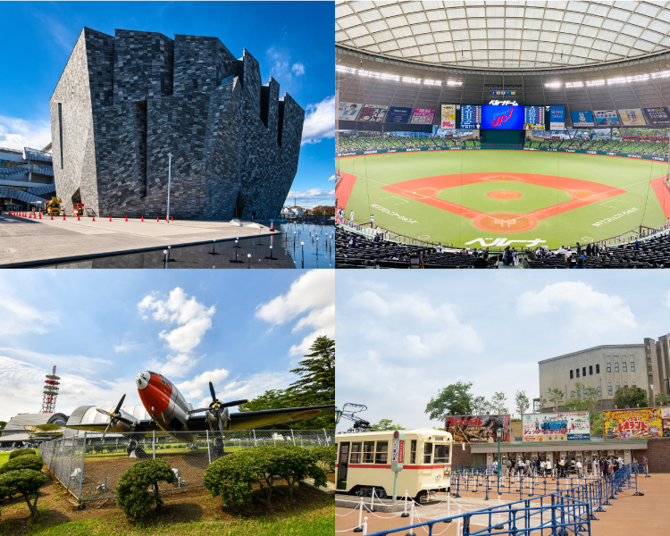

-
生活利便に優れた、
閑静な住宅街再開発が進む所沢を身近にしながら宅地開発された「小手指」「新所沢」駅最寄りのエリア。
再開発が進む所沢を身近にしながら宅地開発された「小手指」「新所沢」駅最寄りのエリアは、閑静な住宅街だけでなく、新旧の店や住まいが混在したモザイク状の街並み、次世代のファミリーが愉しめるエリアです。
-
画像はイメージです。


航空写真は国土地理院ウェブサイト出典のものに一部CG加工をしたものです。
“始発駅・快速急行停車駅”を身近に、
「所沢」を住みこなす新街区。
街・人・自然を享受する豊かで実りある暮らしを叶える所沢榎町アドレス。快速急行停車駅の西武新宿線「新所沢」駅、西武池袋線「小手指」駅の2駅2路線利用可能で、いずれの駅からも徒歩14分～15分となる現地は、都市の喧騒からほどよく距離をおいた閑静な邸宅街。周辺はフラットな立地環境のため、駅をはじめ各施設へのベビーカー等での移動もスムーズ。この選ばれた立地で、家族の笑顔が広がる理想の住まいづくりを愉しみませんか？
街並みレイアウト
掲載の空撮写真は、現地上空からの航空写真に一部CG処理を施したもので、実際とは多少異なります。
開放的あふれる「三方・角立地」の
分譲宅地が誕生
前面道路は幅員約6m～約12mと広々としており、現地周辺は、日差しを遮る高い建物も周囲にないため、幅広い世帯が快適に暮らせる光や風を感じることができる心地よいロケーションが大きな魅力です。
「暮らす・働く・学ぶ・遊ぶ」が揃う、
リビングタウン化で発展の再加速へ

掲載の空撮写真は、現地上空からの航空写真に一部CG処理を施したもので、実際とは多少異なります。
-
都心への快適な
交通アクセス｢池袋」直通28分～、「新宿」直通39分～、さらに地下鉄乗り入れでより便利に。
｢池袋」直通28分～、「新宿」直通39分～、さらに地下鉄乗り入れでより便利に。東京メトロ2路線乗り入れで池袋・渋谷・横浜方面へもダイレクトにアクセス可能。小手指駅、新所沢駅ともに始発電車も多く設定されており、いつでもアクティブな日々を送れる理想的なポジションです。
-

画像はイメージ
-
生活利便に優れた、
閑静な住宅街最寄駅から2駅でアクセス可能な「所沢」駅の周辺は、大型商業施設やマンション開発が相次ぎ日々進化を続ける一方、商店街など、古くから住民に親しまれている飲食店や買い物スポットが多いことも魅力の一つです。
最寄駅から2駅でアクセス可能な「所沢」駅の周辺は、大型商業施設やマンション開発が相次ぎ日々進化を続ける一方、商店街など、古くから住民に親しまれている飲食店や買い物スポットが多いことも魅力の一つです。
-
画像はイメージです。
埼玉県における各ランキング調査において、所沢駅・所沢市はいずれも高い支持を獲得。建築物の支持地盤として安定しているといわれる「武蔵野台地」上に位置する安心のロケーションのほかに、都心への快適なアクセス力や高い商業利便性を持ちながらも、緑が多く落ち着いた住環境が高い人気の要因と言えそうです。